OKpolítico
OKpolíticoPolítica

HR Ratings baja calificación soberana de México por deterioro fiscal y deuda
HR Ratings ajustó la calificación crediticia de México de BBB+ a BBB debido a tensiones fiscales y menores expectativas de crecimiento. La agencia prevé que la deuda pública alcanc
16 de octubre de 2026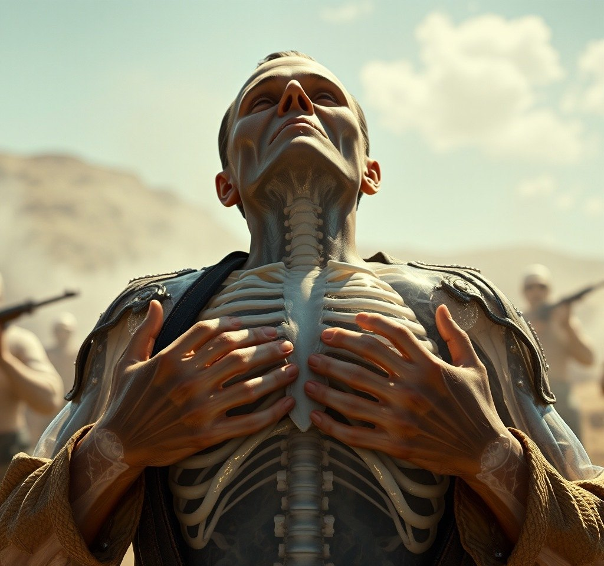
La emboscada final: ¿Quién mató realmente a Pancho Villa?
Exploramos los hechos históricos detrás del asesinato de Francisco Villa en 1923. Desde la emboscada en Parral hasta la impunidad de sus ejecutores y el misterio de su decapitación
15 de octubre de 20265 datos clave sobre Miguel Alemán Valdés, primer presidente civil posrevolucionario
Repasamos cinco datos clave, anécdotas y antecedentes documentados sobre Miguel Alemán Valdés, presidente de México entre 1946 y 1952, contrastando su legado de infraestructura con
14 de octubre de 2026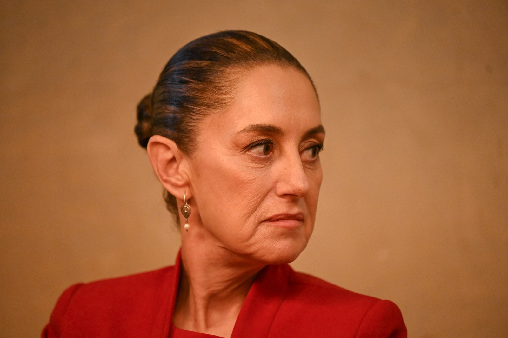
Trabajadores del IMSS marchan en CDMX: exigen aumento del 10% y abasto de insumos
Miles de trabajadores del IMSS se movilizaron en la CDMX y 17 estados exigiendo un aumento salarial del 10% y denunciando desabasto de insumos. Mientras el Gobierno Federal destaca
14 de octubre de 2026¿Cómo murió José María Morelos? Entre el mito y la realidad
Conoce los detalles históricos documentados sobre la captura, juicio y fusilamiento de José María Morelos y Pavón en 1815. Una revisión entre el mito y el archivo oficial en OKpolí
13 de octubre de 2026Cuatro datos históricos poco conocidos sobre el gobierno de Lázaro Cárdenas
Repasamos aspectos poco difundidos sobre el mandato de Lázaro Cárdenas del Río (1934-1940), desde la despenalización temporal de drogas hasta las críticas a su política agraria.
13 de octubre de 2026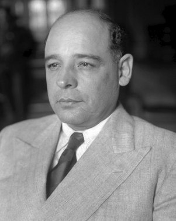
4 datos documentados sobre el presidente Abelardo L. Rodríguez
Repasamos cuatro datos verificados sobre Abelardo L. Rodríguez, quien gobernó México entre 1932 y 1934. Con base en registros enciclopédicos e investigaciones históricas independie
13 de octubre de 2026Estados Unidos sanciona a red acusada de financiar campañas políticas para el narco
El Departamento del Tesoro de Estados Unidos sancionó a 15 sujetos vinculados al Cártel del Noreste, señalando presunto financiamiento a campañas políticas en México. En contraste,
13 de octubre de 2026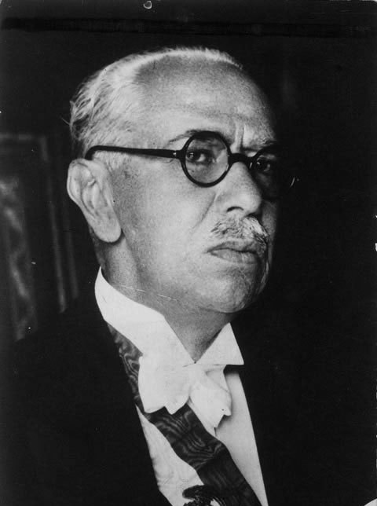
4 datos clave sobre la presidencia de Pascual Ortiz Rubio
Repasamos cuatro datos clave sobre la presidencia de Pascual Ortiz Rubio (1930-1932), el último mandatario mexicano en dimitir al Ejecutivo federal.
12 de octubre de 2026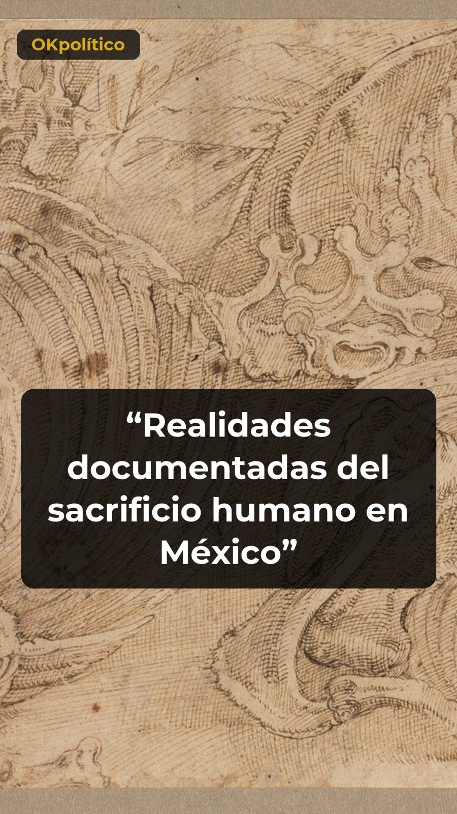
Realidades documentadas del sacrificio humano en México
Exploramos los hallazgos arqueológicos del INAH y especialistas sobre los rituales en el México antiguo. Datos basados en estudios de restos óseos en el Templo Mayor y Teotihuacan.
12 de octubre de 2026La captura, ejecución y los restos de Miguel Hidalgo
Revisión documental sobre el fusilamiento y decapitación de Miguel Hidalgo en 1811. Contrastamos la versión cívica del mausoleo oficial con el estudio osteológico del INAH, el cual
11 de octubre de 2026¿Cómo murió Venustiano Carranza? De presidente a acribillado en la sierra
11 de octubre de 2026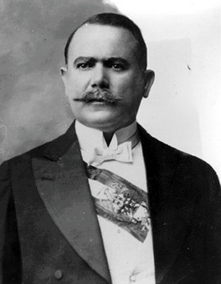
4 hechos documentados sobre la vida militar y política de Álvaro Obregón
Revisamos cuatro episodios documentados de la trayectoria de Álvaro Obregón: su intento de suicidio tras perder el brazo, el uso pionero de aviación militar, su inicial simpatía po
10 de octubre de 2026La traición tras el golpe de Estado: la muerte de Francisco I. Madero
Episodio de la serie «¿Cómo murió...?» sobre la muerte de Francisco I. Madero ocurrida el 22 de febrero de 1913. Repasamos la versión oficial difundida tras el golpe de Estado fren
10 de octubre de 2026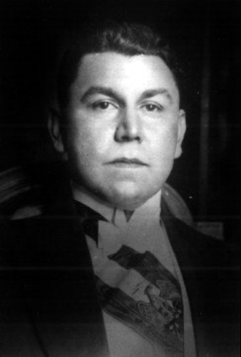
4 curiosidades de Adolfo de la Huerta que (casi) nadie conoce
Repasamos cuatro datos poco conocidos sobre la vida de Adolfo de la Huerta, presidente interino de México en 1920. Desde su carrera en el bel canto durante el exilio hasta el contr
9 de octubre de 2026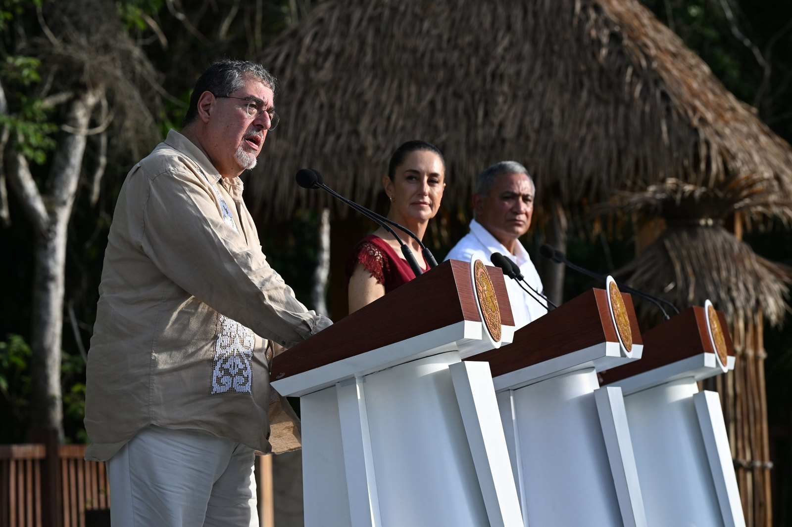
Gobierno de México busca regular contenidos violentos y de odio en plataformas digitales
La presidenta Claudia Sheinbaum presentó un decreto para regular contenidos violentos en redes sociales de forma voluntaria. Mientras el gobierno busca que las empresas retiren mat
9 de octubre de 2026La caída del último emperador de México
Analizamos los hechos históricos detrás de la muerte de Maximiliano de Habsburgo en 1867. Desde su condena en Querétaro hasta el mito de su supuesta supervivencia como Justo Armas
9 de octubre de 2026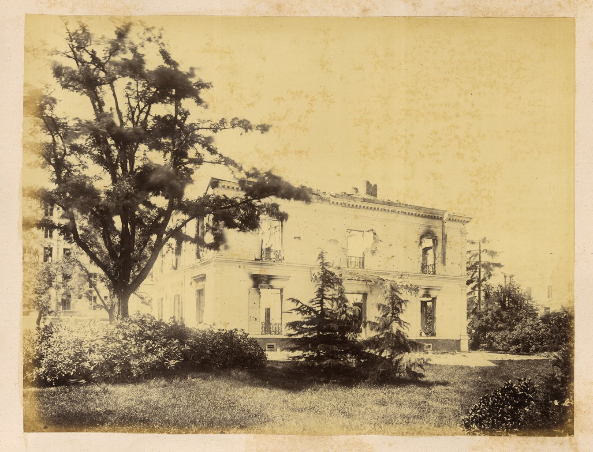
4 datos de Roque González Garza que casi nadie conoce
Repasamos cuatro datos documentados sobre la trayectoria militar y política de Roque González Garza, desde su mandato a los 29 años hasta su participación en la Acción Revolucionar
8 de octubre de 2026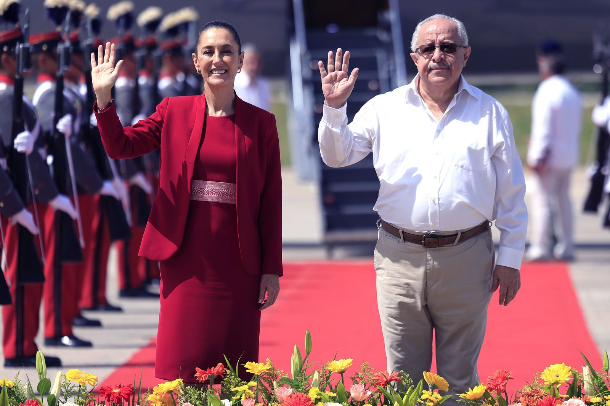
Mauricio Kuri responde a Sheinbaum por academia policial en Querétaro
El gobernador de Querétaro, Mauricio Kuri, respondió a la presidenta Claudia Sheinbaum sobre la academia policial con apoyo de EE. UU., asegurando que se alineará a las directrices
8 de octubre de 2026¿Cómo murió Emiliano Zapata? La emboscada en Chinameca de 1919
Conoce los detalles históricos, la emboscada en Chinameca y las dudas sobre la muerte de Emiliano Zapata el 10 de abril de 1919, basados en archivos oficiales y documentos históric
7 de octubre de 2026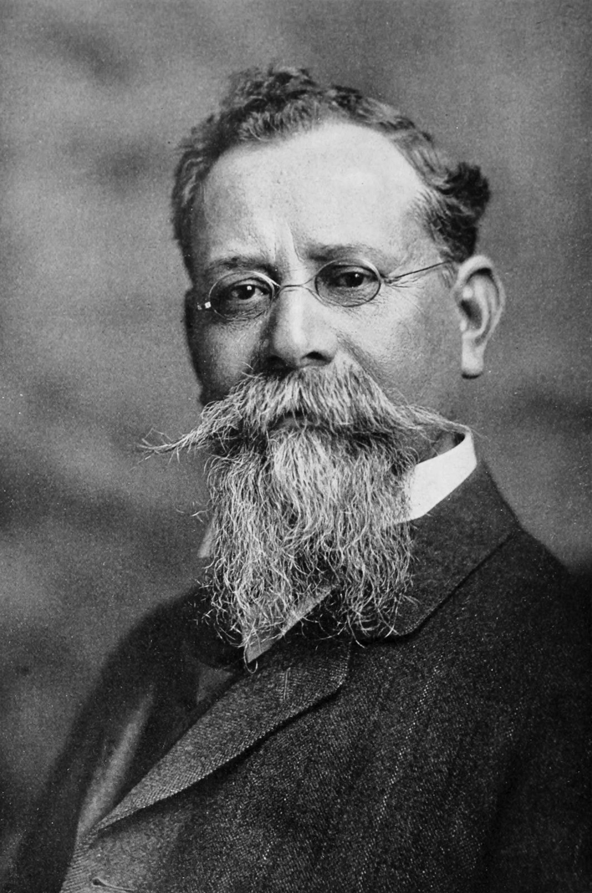
Cuatro aspectos históricos y contrastes sobre la figura de Venustiano Carranza
Revisión documental de cuatro datos históricos sobre Venustiano Carranza: sus planes truncados en la medicina, el rechazo al Telegrama Zimmermann y las controversias de su mandato
7 de octubre de 2026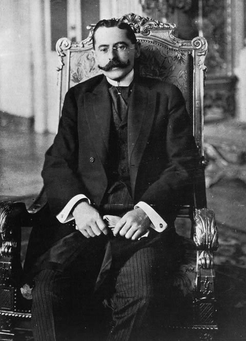
4 datos insólitos sobre Francisco S. Carvajal en la historia de México
Conoce los datos menos conocidos sobre Francisco S. Carvajal, quien asumió la presidencia interina de México en 1914 tras la renuncia de Victoriano Huerta. Información basada en re
7 de octubre de 2026Ministro en retiro advierte subordinación de la Suprema Corte ante el Estado
El ministro en retiro Javier Laynez advierte riesgos de cooptación en la SCJN. Mientras la presidencia de la Corte defiende su autonomía, la JUFED denuncia acoso disciplinario cont
7 de octubre de 2026Debate en el Congreso por empleo e informalidad en México
Durante su comparecencia en la Cámara de Diputados, el secretario del Trabajo, Marath Bolaños, defendió la política laboral del gobierno federal. No obstante, legisladores de oposi
6 de octubre de 2026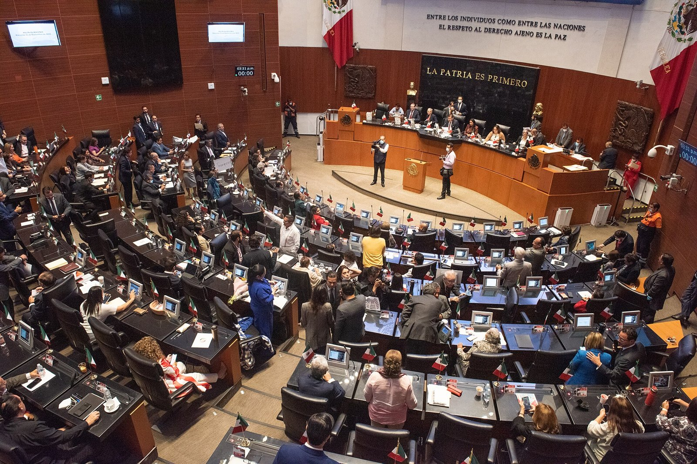
Hacienda niega investigación de UIF contra Amílcar Olán
El secretario de Hacienda, Édgar Amador Zamora, afirmó en el Senado que la UIF no investiga al empresario Amílcar Olán al no recibir requerimientos judiciales. Sin embargo, reporte
6 de octubre de 2026¿Cómo murió realmente el expresidente y héroe nacional Vicente Guerrero?
Conoce los hechos históricos documentados y el contraste forense sobre la muerte del expresidente y héroe nacional Vicente Guerrero en mil ochocientos treinta y uno. Basado en arch
6 de octubre de 2026¿Cómo murió realmente el expresidente Vicente Guerrero en 1831?
Repasamos los hechos históricos, la traición de Francisco Picaluga y los estudios forenses del INAH sobre la muerte de Vicente Guerrero en 1831.
6 de octubre de 2026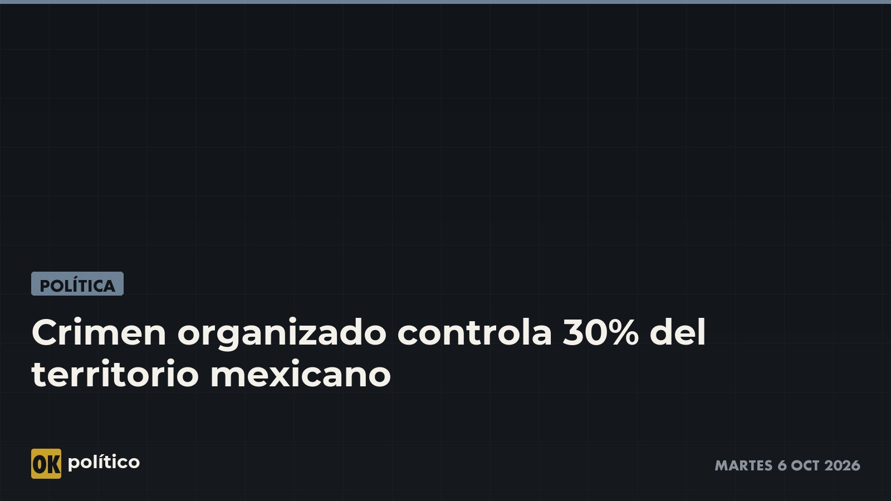
Crimen organizado controla 30% del territorio mexicano
Un estudio publicado por El Imparcial indica que el crimen organizado controla el 30 % del territorio mexicano y solo el 23 % está bajo control estatal, con nueve estados dominados
6 de octubre de 2026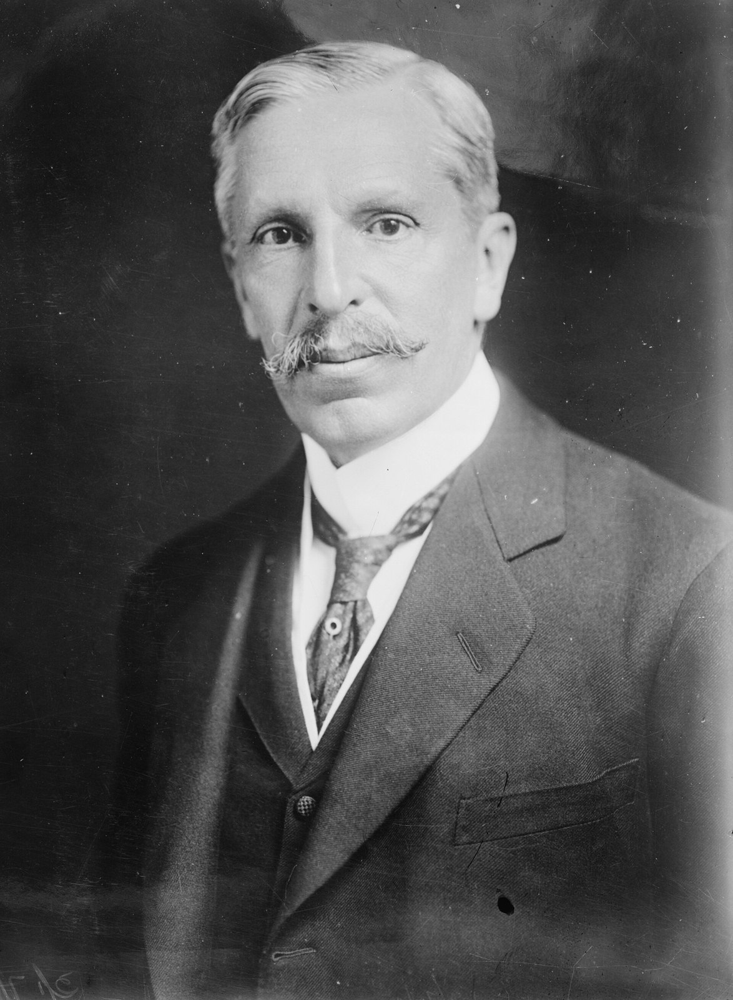
4 curiosidades sobre Pedro Lascuráin que casi nadie conoce
Conoce los datos documentados sobre Pedro Lascuráin, quien detentó la presidencia de México por cuarenta y cinco minutos en 1913. Información basada en registros históricos oficial
6 de octubre de 2026La toma de la Alhóndiga de Granaditas en mil ochocientos diez
Relato sobre la toma de la Alhóndiga de Granaditas el 28 de septiembre de 1810, la participación del Pípila y el debate histórico sobre este hecho. Fuentes: El Financiero, Milenio
5 de octubre de 2026
Sheinbaum cuestiona academia policial en Querétaro con apoyo de Estados Unidos
La presidenta Claudia Sheinbaum solicitó explicaciones al gobernador de Querétaro y al embajador de Estados Unidos por la creación de una academia policial sin coordinar con la SRE
5 de octubre de 2026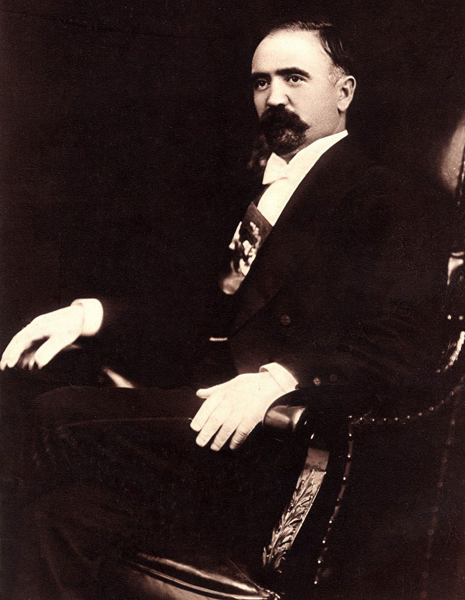
4 datos poco conocidos sobre la vida de Francisco I. Madero
Analizamos la historia de Francisco I. Madero a través de cuatro datos sobre su vida personal y el contraste de su gestión frente al movimiento agrario de Emiliano Zapata.
5 de octubre de 2026
Sheinbaum garantiza que las Fuerzas Armadas nunca reprimirán al pueblo
La presidenta Claudia Sheinbaum garantizó en Veracruz que las Fuerzas Armadas nunca recibirán órdenes de reprimir al pueblo. Durante el 205 aniversario de la Armada de México, dest
4 de octubre de 20264 curiosidades de Porfirio Díaz que casi nadie conoce
Analizamos la figura de Porfirio Díaz a través de datos históricos documentados. Desde sus oficios de juventud y su vida familiar, hasta el contraste entre el desarrollo de la infr
5 de octubre de 2026